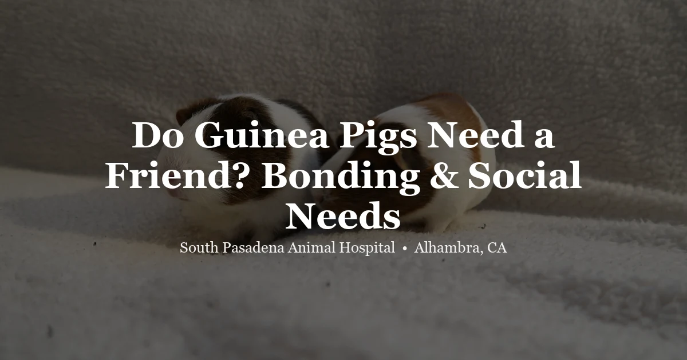

May 5, 2026 · 7 min read
Do Guinea Pigs Need a Friend? Bonding & Social Needs Explained

If you have a guinea pig or are thinking about getting one, one of the most important decisions you'll make is whether to get a companion. The short answer is: yes, guinea pigs are highly social animals, and most genuinely thrive — and live longer — with at least one other guinea pig in their life.
This isn't an opinion or preference. Guinea pigs evolved as herd animals in South America, spending their lives in groups. Isolation is genuinely stressful for them in a physiological way. At our Alhambra clinic, we see the health difference between well-socialized guinea pigs and those kept alone — it's real.
Why Guinea Pigs Need Companions
In the wild, guinea pigs live in small herds, sleeping huddled together, grooming each other, foraging in groups. Their nervous systems are calibrated for constant social input. Without it, stress hormones rise chronically, immune function is suppressed, many become less active and less interested in exploring, some develop repetitive behaviors like bar-chewing or circling, and appetite often declines. Guinea pigs kept alone tend to be more reactive, more prone to illness, and shorter-lived than bonded pairs. The difference isn’t subtle.
Guinea pigs kept alone tend to be more reactive to handling, more prone to illness, and live shorter lives on average than bonded pairs. The difference isn't subtle in many cases.
This is why Switzerland has had laws since 2008 requiring guinea pigs to be kept with at least one companion, with provisions for temporarily widowed guinea pigs. It's also why virtually every guinea pig rescue and welfare organization recommends pairs or groups.
What Pairings Work Best
Two Females (Sow-Sow)
The most commonly recommended pairing. Female guinea pigs generally have a relatively low-conflict social dynamic. Most pairs of sows establish a hierarchy quickly and coexist peacefully. Some initial chasing and rumble-strutting is normal dominance behavior; all-out fighting (sustained biting that draws blood) is uncommon in female pairs.
Two Males (Boar-Boar)
This pairing can work well, but requires more care. Best outcomes happen when both males are siblings or have been together since young, when one male is neutered (which dramatically reduces territorial and sexual behavior), and when the enclosure is large enough that both can have their own hides and feeding areas.
Two adult males meeting for the first time often have significant dominance conflicts. This doesn't mean it can never work, but introductions need to be very careful and gradual, and housing them together may not succeed if their personalities clash.
Neutered Male + Female (or Multiple Females)
Often described as the most successful pairing type. A neutered male living with one or two females typically creates a harmonious and socially active group. The neutered male shows less territorial behavior, and the group tends to be very bonded.
Mixed-Sex Groups
Entirely possible with neutered males. An unneutered male with females will result in rapid reproduction — guinea pig pregnancies are fast (70 days) and litters average 2–4 pups, so this needs to be accounted for carefully.
How to Introduce Guinea Pigs
The introduction process matters enormously. Throwing a new guinea pig directly into an established guinea pig's cage often results in significant conflict because the resident guinea pig views their space as territory.
The steps that work:
- Quarantine period first. If introducing a new animal, keep them separate for 2–3 weeks to ensure the newcomer isn't bringing illness.
- Neutral territory introduction. Meet in a clean area neither animal has used — a clean bathtub, a playpen, or a section of floor neither has been in. Provide multiple feeding piles so they don't compete over one spot.
- Allow normal dominance behavior. Expect chasing, rumble-strutting (a low vibrating sound while swaying), sniffing, and some mounting. This is normal. Don't separate them for this — it's how they establish their hierarchy.
- Separate only if there is dangerous fighting. Actual biting that draws blood, teeth chattering at each other, or sustained chasing where one animal cannot escape means the session needs to end and be restarted slowly.
- Multiple neutral sessions before cohousing. 2–3 successful neutral sessions over a few days builds familiarity.
- Clean and rearrange the main cage before moving both in. Scrub the cage thoroughly to remove scent markers, rearrange hides and objects, and move both guinea pigs in simultaneously. This makes the cage feel new to both animals rather than established territory for the resident.
Signs of Successful Bonding
Bonding is going well when they sleep near or touching each other, groom each other (one grooming the other’s head or neck), eat side by side without tension, and popcorn — that jumping-spinning joy behavior — together. Synchronized activity: exploring, eating, and resting at the same times. Most pairs reach stable hierarchy within one to two weeks.
Most pairs reach stable hierarchy within 1–2 weeks. Some establish it within hours. The relationship continues to deepen over the following weeks and months.
When Bonding Fails
Not every pair bonds successfully. Signs that permanent separation may be needed: persistent biting that draws blood after multiple attempts, one animal blocking the other from food or water, significant weight loss in one animal from chronic stress, no reduction in conflict after three to four weeks of careful cohousing.
If a pairing fails, options include: trying a different companion, housing them in adjacent pens where they can hear and smell each other without physical contact, or in some cases, consultation with a guinea pig behavior resource.
Housing Two Guinea Pigs
When housing a pair, size matters more than for a single guinea pig. Minimum for two guinea pigs: 10.5 square feet of floor space. Many standard commercial cages sold as "guinea pig cages" fall short of this. Common solutions include:
- C&C cages (Cubes and Coroplast) — custom, spacious, and inexpensive to build. 2x4 grid minimum for two guinea pigs.
- Large pet pens configured as enclosures
- Purpose-built large commercial enclosures (verify dimensions before buying)
Provide two of everything: two water sources, two feeding areas, at least two hides. This reduces resource competition and helps even a lower-ranking guinea pig access what they need without conflict.
After Losing a Guinea Pig
When one guinea pig in a bonded pair dies, the surviving animal is genuinely bereaved in a behavioral sense. They may search for their companion, become less active, eat less, and vocalize differently. Providing extra interaction and considering a new companion (after allowing time to grieve and following the quarantine/introduction protocol) is typically the best long-term approach.
If you're working through a health concern with a surviving or newly single guinea pig, we're here to help at South Pasadena Animal Hospital. See our pricing page for exam costs, or call (626) 441-1314.
Frequently Asked Questions
Do guinea pigs need a companion?
Yes. Guinea pigs are highly social animals that evolved in herds. Isolation causes chronic stress, immune suppression, reduced activity, and shorter lifespans. Pairs or small groups are strongly recommended by veterinary and welfare guidelines.
Can guinea pigs live alone?
They can survive alone, but most don't thrive. If keeping a single guinea pig, your daily interaction becomes even more important — though it cannot fully replace guinea pig companionship. Even one same-species companion makes a meaningful difference.
What is the best pairing for guinea pigs?
Two females is the easiest pairing for most owners. A neutered male + one or more females is also excellent. Two males can work when bonded as juveniles or if one is neutered. Avoid two intact adult males meeting for the first time.
How do you introduce guinea pigs to each other?
Start in neutral territory. Allow normal dominance behavior (chasing, rumble-strutting, mounting) without interfering. Separate only for actual biting/blood. After 2–3 successful neutral sessions, clean and rearrange the main cage before housing both together simultaneously.
How long does it take for guinea pigs to bond?
Some bond within hours; most establish a stable hierarchy within 1–2 weeks. Bonding continues to deepen over subsequent months. Signs of bonding include sleeping together, mutual grooming, and synchronized activity.